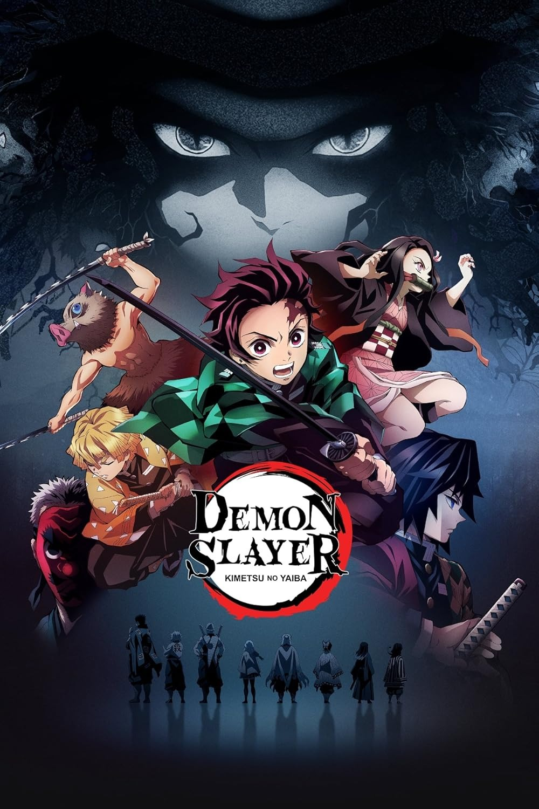
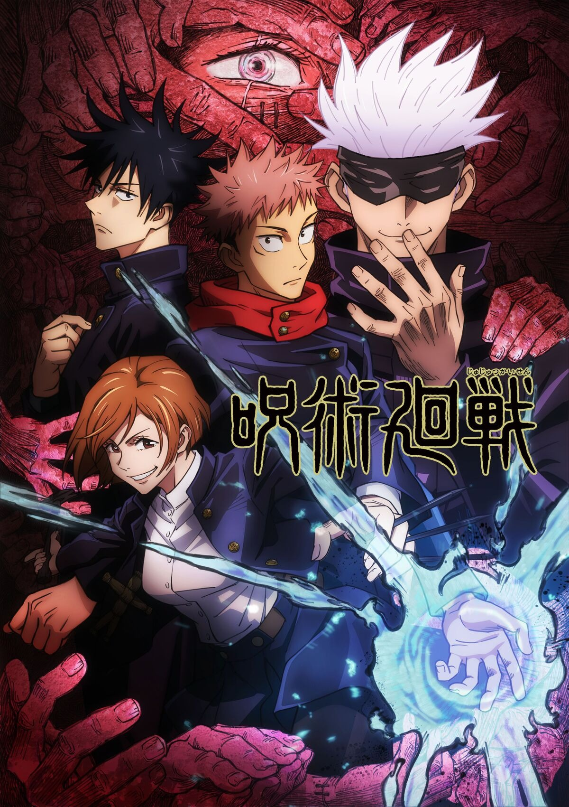

✨ Destacados de la semana

Kimetsu no Yaiba - Temporada 4
Tanjiro continúa su camino como cazador de demonios enfrentando nuevas lunas superiores.
Ver en Crunchyroll
Frieren: Más allá del final del viaje
Una historia melancólica y mágica sobre el valor del tiempo y la amistad.
Ver en Crunchyrollüåü Recomendados por el staff

Jujutsu Kaisen - Temporada 2
Una serie intensa llena de acción, emociones y una animación brutalmente buena.
Ver en CrunchyrollChainsaw Man
Estilo visual único, personajes intensos y una historia caótica y emocionante. ¡Una experiencia fuera de lo común!
Ver en Crunchyroll